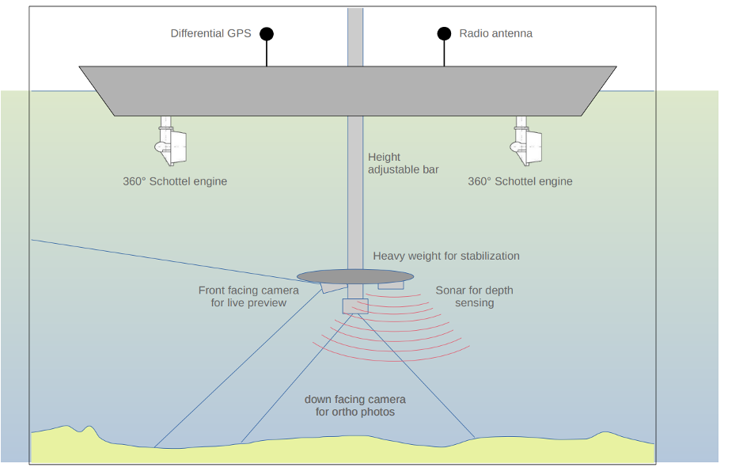
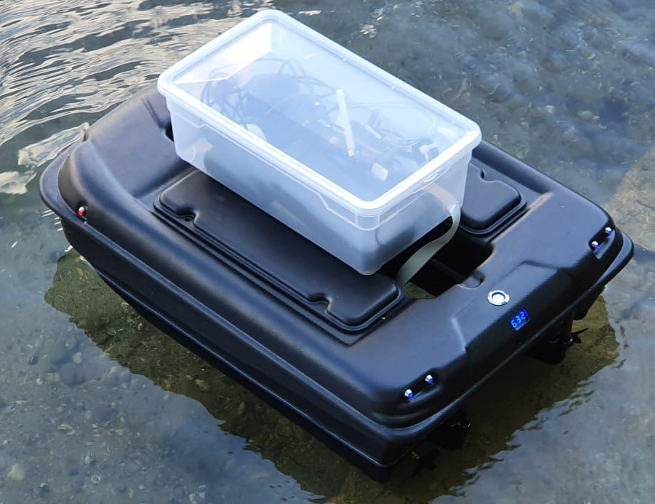
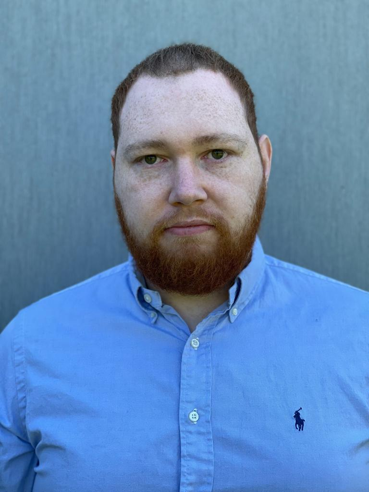
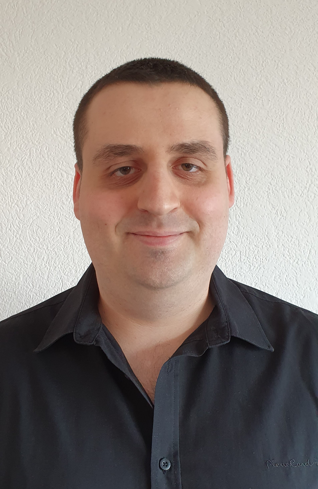
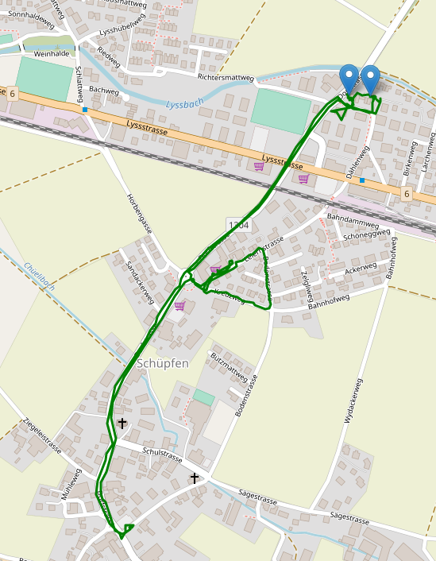

What is AUGIS?
AUGIS is the project of our bachelor thesis and it stands for Autonomous Underwater Ground Image Stitcher. It
is
a project to create a small boat which can create Orthophotos of the seafloor.


Who is working on it?
We are two Computer Science students at the Bern University of Applied Sciences and we are currently in our
last semester of our
bachelor's degree program.
-

Julian Haldimann
-

Manuel Gasser
06.03.2021
 On the image you see our first tries to connect the existing parts of the boat
with our developed Switch Board with which we are able to switch between using
the Radio Remote or our own programs on the Arduino to control the boat.
On the image you see our first tries to connect the existing parts of the boat
with our developed Switch Board with which we are able to switch between using
the Radio Remote or our own programs on the Arduino to control the boat.
13.03.2021

 On these two images you can see our electronics block which contains a Raspberry Pi (bottom), a Dragino
Hat for GPS data (middle) and an Arduino MKR WiFi 1010 (top). This block will eventually be what we use
to control the boat.
On these two images you can see our electronics block which contains a Raspberry Pi (bottom), a Dragino
Hat for GPS data (middle) and an Arduino MKR WiFi 1010 (top). This block will eventually be what we use
to control the boat.
20.03.2021

On this image you can see the test route we recorded with our GPS app on the iPhone and the website.
The location data from the iPhone is accurate to about 3-4 meters which is not enough for driving exact
routes but it is enough for basic autonomous driving.